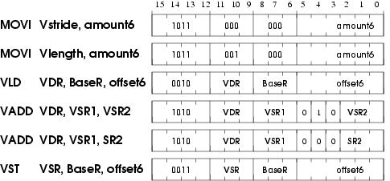

for(i = 0; i < 100; i++) A[i] = ((B[i] * C[i]) + D[i]) / 2;
- Translate this code into assembly language using the following instructions in the ISA ( note the number of cycles each instruction takes is shown with each instruction):
LEA Ri, X (1 cycle) ; Ri <- address of X LD Ri, Rj, Rk (11 cycles) ; Ri <- MEM[Rj + Rk] ST Ri, Rj, Rk (11 cycles) ; MEM[Rj + Rk] <- Ri MOVI Ri, Imm (1 cycle) ; Ri <- Imm MUL Ri, Rj, Rk (6 cycles) ; Ri <- Rj * Rk ADD Ri, Rj, Rk (4 cycles) ; Ri <- Rj + Rk ADD Ri, Rj, Imm (4 cycles) ; Ri <- Rj + Imm RSHFA Ri, Rj, amount (1 cycle) ; Ri <- RSHFA (Rj, amount) BRcc X (1 cycle) ; Branch to X based on condition codesAssume it takes one memory location to store each element of the array. Also assume that there are 8 registers (R0-R7).
How many cycles does it take to execute the program? - Now write Cray-like vector/assembly code to perform this operation in the shortest time possible. Assume that there are 8 vector registers and the length of each vector register is 64. Use the following instructions in the vector ISA:
LD Vst, #n (1 cycle) ; Vst <- n LD Vln, #n (1 cycle) ; Vln <- n VLD Vi, X (11 cycles, pipelined) VST Vi, X (11 cycles, pipelined) Vmul Vi, Vj, Vk (6 cycles, pipelined) Vadd Vi, Vj, Vk (4 cycles, pipelined) Vrshfa Vi, Vj, amount (1 cycles) Vbrcc X (1 cycle)How many cycles does it take to execute the program on the following processors? Assume that memory is 16-way interleaved.- Vector processor without chaining, 1 port to memory (1 load or store / cycle)
- Vector processor with chaining, 1 port to memory
- Vector processor with chaining, 2 read ports and 1 write port to memory

Note: VDR = Vector Destination Register, VSR = Vector Source Register
MOVI
If IR[11:9] = 000, MOVI moves the unsigned quantity amount6 to Vector Stride Register (Vstride).
If IR[11:9] = 001, MOVI moves the unsigned quantity amount6 to Vector Length Register (Vlength).
This instruction has already been implemented for you.
VLD
VLD loads a vector of length Vlength from memory into VDR. VLD uses the opcode previously used by LDB. The starting address of the vector is computed by adding the LSHF1(SEXT(offset6)) to BaseR. Subsequent addresses are obtained by adding LSHF1(ZEXT(Vstride)) to the address of the preceding vector element.
VST
VST writes the contents of VSR into memory. VST uses the opcode previously used by STB. Address calculation is done in the same way as for VLD.
VADD
If IR[4] is a 1, VADD adds two vector registers (VSR1 and VSR2) and stores the result in VDR.
If IR[4] is a 0, VADD adds a scalar register (SR2) to every element of VSR and stores the result in VDR.
VLD, VST, and VADD do not modify the content of Vstride and Vlength registers.
The following five hardware structures have been added to LC-3b in order to implement LmmVC-3.
Vector Register File with eight 63-element Vector registers
Vector Length Register
Vector Stride Register
A third input to DRMUX containing IR[8:6]
Grey box A
Box labeled X
These structures are shown in the LmmVC-3 datapath. Click here for the LmmVC-3 datapath diagram.
{kind=link}
- A 6-bit input to the Vector Register file has been labeled X on the datapath diagram. What is the purpose of this input? (Answer in less than 10 words )
- The logic structure X contains a 6-bit register and some additional logic. X has two control signals as its inputs. What are these signals used for?
- Grey box A contains several additional muxes on both input lines to the ALU. Complete the logic diagram of grey box A (shown below) by showing all muxes and interconnects. You will need to add new signals to the control store; be sure to clearly label them in the logic diagram.
Hint 1: Keep in mind that we will still need to support all the existing scalar operations.
Hint 2: The XOR operation in the ALU can be used to compare two values.
Hint 3: Our solution required 3 additional control signals and 6 2-to-1 muxes.
- We show the beginning of the state diagram necessary to implement VLD. Using the notation of the LC-3b State Diagram, add the states you need to implement VLD. Inside each state describe what happens in that state. You can assume that you are allowed to make any changes to the microsequencer that you find necessary. You do not have to make/show these changes. You can modify BaseR and the condition codes. Make sure your design works when Vlength = 0. Full credit will be awarded to solutions that require no more than 7 states.

Using the Booth Multiplication Algorithm, multiply the two unsigned 6-bit numbers 010111 and 011110. Show the intermediate results after each step.
Inputs to the Look Ahead Carry Generator are of two types, Pi and Gi. What does the Pi and Gi signals signify?
A residue number system has been designed with three moduli, p1, p2, and p3. The number 17 is represented as 261. The number 25 is represented as 039. What are the three moduli?